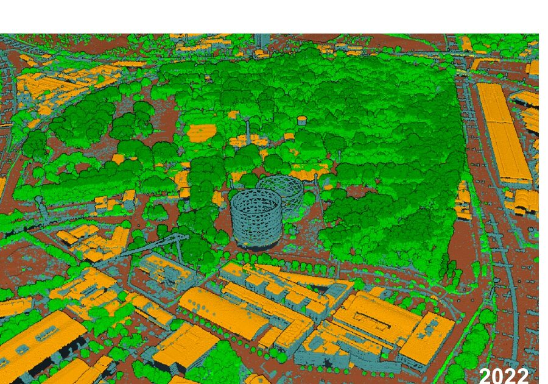

Visiting research · Université libre de Bruxelles · 2024–25
During six months at the Université libre de Bruxelles I built the point-cloud classifier now used in the Milan workflow, and started fine-tuning the RandLA-Net deep network on GPU.
The problem
Before a city can be simulated, every one of its millions of LiDAR points has to be labeled: is it ground, a tree or a building? Doing that by hand doesn't scale.
What I built
During six months in Brussels (Oct 2024 – Mar 2025) I built a semi-automatic Random Forest classifier on geometric features (height, intensity, planarity, sphericity, PCA anisotropy), now used in the Milan workflow, and started fine-tuning the RandLA-Net deep network on my own labeled Milan data, on GPU.
Result
The classified point clouds feed the geometry step of the City of Milan workflow, which rebuilds 1,259 buildings from the 2022 and 2024 surveys.
In progress. I'm re-running the RandLA-Net evaluation with a train/test split that removes the bias between tall and low buildings, so the accuracy reflects truly unseen areas.
